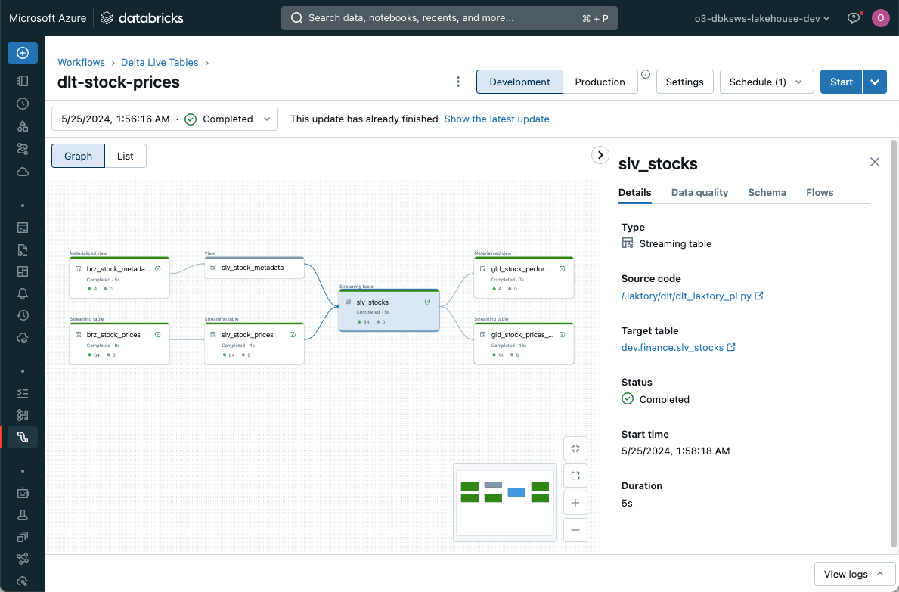

Data Pipeline
API Documentation
The Pipeline model is the cornerstone of Laktory, orchestrating the process of reading, transforming, and writing data. It is built around the concept of the DataFramea two-dimensional, tabular data structure with labeled rows and columnscommonly used in data analysis for efficient data manipulation. While Pandas, Spark, and Polars are popular DataFrame backends, Laktory primarily operates on Narwhals DataFrames. This abstraction allows seamless integration with multiple engines (e.g., Spark, Polars) and enables selecting the most suitable backend for each operation.

Pipeline Node
API Documentation
A pipeline is composed of a sequence of nodes, each designed to generate a Spark or Polars DataFrame. Each node reads from a designated source, applies specified transformations, and optionally writes the result to one or more sinks.

Sources and Sinks


Laktory supports a variety of sources and sinks, including data files and data tables. By linking a node as the source for a downstream node, you establish dependencies, creating a directed acyclic graph (DAG).
Transformer

The transformations are defined through a transformer which is a chain of SQL statements and/or DataFrame API function calls. This flexible and highly modular framework supports scalable batch and streaming operations.
Expectations

Data quality is achieved through the use of expectations and corresponding actions, which can drop, quarantine, or even halt pipelines if invalid data is detected before it reaches the output.
Declaration
Because a pipeline definition is entirely serializable, it can be declared as Python code or as a YAML file. The latter provides the required portability for deployment on remote compute environments. This makes Laktory ideal for a DataOps approach using infrastructure-as-code principles.
Here is an example of a pipeline declaration:
name: pl-stock-prices
dataframe_backend: POLARS
nodes:
- name: brz_stock_prices
source:
path: ./data/stock_prices/
format: JSONL
sinks:
- path: ./data/brz_stock_prices.parquet
format: PARQUET
- name: slv_stock_prices
source:
node_name: brz_stock_prices
as_stream: false
sinks:
- path: ./data/slv_stock_prices.parquet
format: PARQUET
transformer:
nodes:
- expr: |
SELECT
CAST(data.created_at AS TIMESTAMP) AS created_at,
data.symbol AS name,
data.symbol AS symbol,
data.open AS open,
data.close AS close,
data.high AS high,
data.low AS low,
data.volume AS volume
FROM
{df}
- func_name: unique
func_kwargs:
subset:
- symbol
- created_at
keep:
any
import laktory as lk
brz = lk.models.PipelineNode(
name="brz_stock_prices",
source=lk.models.FileDataSource(
path="./data/stock_prices/",
format="JSONL",
),
sinks=[
lk.models.FileDataSink(
path="./data/brz_stock_prices.parquet",
format="PARQUET",
)
],
)
slv = lk.models.PipelineNode(
name="slv_stock_prices",
source=lk.models.PipelineNodeDataSource(node_name="brz_stock_prices"),
sinks=[
lk.models.FileDataSink(
path="./data/slv_stock_prices.parquet",
format="PARQUET",
)
],
transformer={
"nodes": [
lk.models.DataFrameExpr(
expr="""
SELECT
CAST(data.created_at AS TIMESTAMP) AS created_at,
data.symbol AS name,
data.symbol AS symbol,
data.open AS open,
data.close AS close,
data.high AS high,
data.low AS low,
data.volume AS volume
FROM
{df}
"""
),
lk.models.DataFrameMethod(
func_name="unique",
func_kwargs={
"subset": ["symbol", "created_at"],
"keep": "any"
}
)
]
}
)
pl = lk.models.Pipeline(
name="pl-stock-prices",
dataframe_backend="POLARS",
nodes=[brz, slv],
)
Execution
Local
You can execute the pipeline in a local or remote Spark session using the pipeline.execute() command. If Polars
is the DataFrame engine, the pipeline can run in a simple Python environment without external dependencies. In all
cases, each node processes sequentially: reading data from the source, applying transformations, and writing to the
sink.
from laktory import models
with open("pipeline.yaml") as fp:
pl = models.Pipeline.model_validate(fp)
pl.execute()
print(pl.nodes_dict["slv_stock_prices"].output_df.to_native().collect())
[laktory] Executing pipeline node slv_stock_prices
[laktory] Reading `PipelineNodeDataSource` brz_stock_prices with DataFrameBackends.POLARS
[laktory] Reading pipeline node brz_stock_prices from output DataFrame
[laktory] Read completed.
[laktory] Executing DataFrame Transformer
[laktory] Executing DataFrame transformer node 0 (DataFrameExpr).
[laktory] DataFrame as
SELECT
CAST(data.created_at AS TIMESTAMP) AS created_at,
data.symbol AS name,
data.symbol AS symbol,
data.open AS open,
data.close AS close,
data.high AS high,
data.low AS low,
data.volume AS volume
FROM
{df}
[laktory] Executing DataFrame transformer node 1 (DataFrameMethod).
[laktory] Applying df.unique(subset=['symbol', 'created_at'],keep=any)
[laktory] Writing static df to ./data/slv_stock_prices.parquet with format 'PARQUET' and {}
[laktory] Write completed.
created_at name symbol open close high low volume
--- --- --- --- --- --- --- ---
datetime[s] str str f64 f64 f64 f64 f64
2023-04-04 AMZN AMZN 103.175003 103.129997 103.419998 103.072502 3.998703e6
13:30:00
2023-04-06 MSFT MSFT 288.859985 290.360107 291.070007 288.700012 4.355298e6
13:30:00
2023-03-02 AMZN AMZN 90.589996 90.860001 91.004997 90.529999 4.143251e6
12:30:00
2023-10-03 AMZN AMZN 125.150002 125.580002 125.699997 124.800003 5.416032e6
11:30:00
2024-03-05 AAPL AAPL 170.785004 170.470001 170.828705 170.149994 4.315788e6
12:30:00
2023-11-30 AAPL AAPL 188.335007 188.789993 188.830002 188.289993 2.75059e6
13:30:00
2023-03-22 MSFT MSFT 275.850006 277.049988 277.149994 275.764008 1.790997e6
12:30:00
2023-01-12 GOOGL GOOGL 91.480003 91.510002 91.870003 89.75 7.320764e6
09:30:00
2023-07-20 GOOGL GOOGL 120.459999 120.059998 120.470001 119.764999 2.94552e6
12:30:00
2023-08-22 AAPL AAPL 176.922897 177.214996 177.429993 176.310104 6.823573e6
10:30:00
Spark
If you select PYSPARK as the DataFrame backend, Laktory will instantiate
a default Spark Session, but you can register your own instead. This works using a
local, a Databricks notebook or Databricks connect Spark Session:
from databricks.connect import DatabricksSession
from laktory import register_spark_session
spark = DatabricksSession.builder.getOrCreate()
register_spark_session(spark)
Orchestrators
While local execution is ideal for small datasets or prototyping, orchestrators unlock more advanced features such as parallel processing, automatic schema management, and historical re-processing. The desired orchestrator can be configured directly within the pipeline.
- name: stock_prices
nodes: ...
orchestrator:
type: DATABRICKS_PIPELINE
catalog: dev
target: finance
clusters:
- name : default
node_type_id: Standard_DS3_v2
autoscale:
min_workers: 1
max_workers: 2
libraries:
- notebook:
path: /.laktory/dlt/dlt_laktory_pl.py
The choice of orchestrator determines which resources are deployed when
running the laktory deploy CLI command.
Databricks Job
A Databricks Job is a powerful orchestration mechanism. In this case, Laktory will create a task for each node, enabling parallel execution of nodes. Each reading and writing operation is entirely handled by Laktory source and sink.

Each task will call a Laktory function that will read the pipeline configuration and execute a node.
Selecting the DATABRICKS_JOB orchestrator will deploy a pipeline json
configuration file which can be found in your workspace under /Workspace/{laktory_root}/pipelines/{pipeline_name}/.
Databricks Lakeflow Declarative Pipeline
Lakeflow Declarative Pipelines offers features like automatic schema change management, continuous execution, advanced monitoring and autoscaling.

Each pipeline node runs inside a dlt.table() or dlt.view() function. In the context of Declarative Pipelines, node
execution does not trigger a sink write, as this operation is internally managed by Lakeflow. When a source is a
pipeline node, dlt.read() and dlt.read_stream() functions are called to ensure compatibility with the framework.
To use the DATABRICKS_PIPELINE orchestrator, you must also add the supporting
notebook
to your stack.
Here is a simplified version:
import dlt
import laktory as lk
with open("pipeline.yaml") as fp:
pl = lk.models.Pipeline.model_validate_yaml(fp.read())
def define_table(node, sink):
@dlt.table(**sink.dlt_table_or_view_kwargs)
def get_df():
# Execute node
node.execute()
if sink and sink.is_quarantine:
df = node.quarantine_df
else:
df = node.output_df
# Return
return df.to_native()
# Build nodes
for node in pl.nodes:
for sink in node.sinks:
wrapper = define_table(node, sink)
df = lk.dlt.get_df(wrapper)
display(df)
Selecting the DATABRICKS_PIPELINE orchestrator will deploy a pipeline json
configuration file which can be found in your workspace under /Workspace/{laktory_root}/pipelines/{pipeline_name}/.
Apache Airflow
Support for Apache Airflow as an orchestrator is on the roadmap.
Dagster
Support for Dagster as an orchestrator is on the roadmap.
Streaming Operations
Laktory supports event-based and kappa architectures using Apache Spark Structured Streaming for continuous, scalable data processing.
By setting as_stream: True in a pipeline node's data source, the DataFrame becomes streaming-enabled, processing only
new rows of data at each run instead of re-processing the entire dataset.
Streaming does not mean the pipeline is continuously running. Execution can still be scheduled, but each run is
incremental. Currently, the only way to deploy a continuously running pipeline is by selecting the Databricks pipeline
orchestrator with continuous: True.
For more information about streaming data, consider reading this blog post.